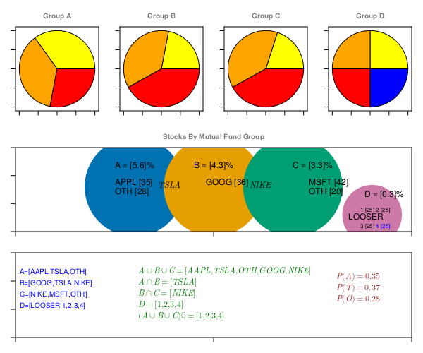

Probability
In this chapter, we will learn the basics of probability and statistical distributions in context of real world financial data. Then in later section, we will apply these concepts to get insights on our complete Finance data set.
- Probability Distributions
- Permutations and Combinations
- Probability Distributions Functions (PDFs)
- Calculating Probability Distributions on Finance data
Probability Distributions
how do you explain what a probability distribution in statistics is?
In simple terms, we use a single value to represent a group of data. This value is called the measure of central tendency and it describes what is typical or average in the data. Common measures of central tendency include the mean, median, and mode.
Probability and distributions aid in comprehending general patterns within data during statistical analysis.
For example, given a set of 100k different Mutual Funds or Stock prices estimated growth is, we want to have a general idea of about how each group of Mutual Fund or stock prices is performing in over all market conditions.
If you are wondering, why we even care of learning probability, statistics, algebra and calculus functions for the sake of Finance Analytics. It's because building AI, is all about using mathematics to find statistical association to rationally predict outcome of an event given a set of inputs, than casual reasoning.
As we progress, we will see, how learning statistical associations and using calculus for automation in small steps, lead to performing statistical tasks, automate predictive analytics, which are fast improved fact based statistical association rather than casual reasoning, and often outperforms human intuitive analytics.
ROI by Investment group data example
let's first review this sample example, we will use this data table example, in almost every section of this chapter below.
| Group | ROI | Stocks | Percent |
|---|---|---|---|
| A | 5.6 | AAPL | 35 |
| A | 5.6 | TSLA | 37 |
| A | 5.6 | OTH | 28 |
| B | 4.3 | GOOG | 36 |
| B | 4.3 | TSLA | 22 |
| B | 4.3 | NIKE | 42 |
| C | 3.3 | NIKE | 38 |
| C | 3.3 | MSFT | 42 |
| C | 3.3 | OTH | 20 |
| D | 0.3 | LOOSER_1 | 25 |
| D | 0.3 | LOOSER_2 | 25 |
| D | 0.3 | LOOSER_3 | 25 |
| D | 0.3 | LOOSER_4 | 25 |
ROI by Investment group data (transposed)
| Stocks | A | B | C | D | sum |
|---|---|---|---|---|---|
| AAPL | 35 | 0 | 0 | 0 | 35 |
| TSLA | 37 | 22 | 0 | 0 | 59 |
| OTH | 28 | 0 | 20 | 0 | 48 |
| GOOG | 0 | 36 | 0 | 0 | 36 |
| NIKE | 0 | 42 | 38 | 0 | 80 |
| MSFT | 0 | 0 | 42 | 0 | 42 |
| LOOSER_1 | 0 | 0 | 0 | 25 | 25 |
| LOOSER_2 | 0 | 0 | 0 | 25 | 25 |
| LOOSER_3 | 0 | 0 | 0 | 25 | 25 |
| LOOSER_4 | 0 | 0 | 0 | 25 | 25 |
ROT by Investment group
┌ ┐
A ┤■■■■■■■■■■■■■■■■■■■■■■■■■■■■■■■■■■■ 5.6
Category B ┤■■■■■■■■■■■■■■■■■■■■■■■■■■■ 4.3
C ┤■■■■■■■■■■■■■■■■■■■■■ 3.3
D ┤■■ 0.3
└ ┘
ROI (%) 
What is a Probability
A probability event is defined as set of outcomes of an experiment. In simpler words, Probability is likelihood of occurrence of an event.
As an example, What’s the probability of the getting a four on six face dice?
Calculating statistical probability mathematically helps us answer these type of questions.
\[ f = Number of favorable Outcomes \\ T = Total number of outcomes \\ P(X==4) = \frac{P(X==4)}{P(1)+P(2)+P(3)+P(4)+P(5)+P(6)} \\ P(X==4) = \frac{1}{1+1+1+1+1+1} \\ P(X==4) = \frac{1}{6}\]
Similarly, calculating mathematical probabilities may help us answer more complex questions like, given our Finance data, We may want to use Probability or likelihood of best possible return from given amount invested in certain investment group/category.
In ROI by Investment group data example, Category A has maximum ROI. Assuming, one Mutual Fund belongs to only one category, probability of getting maximum ROI on a given fund is 0.25.
\[ f = Number of favorable Outcomes \\ T = Total number of outcomes \\ P(X = maxROI) = \frac{f}{T} \\ P(X = maxROI) = \frac{P(C)}{P(A)+P(B)+P(C)+P(D)} \\ P(X = maxROI) = \frac{1}{1+1+1+1} \\ P(X = maxROI) = 0.25\]
Sample space
All set of possible set of outcomes of an experiment is the sample space.
let's assume, given there are 4 possible directions ($North$, $South$, $East$, $West$).
- Probability of person walking in North Direction is
1/4. Given Sample space ($North$, $South$, $East$, $West$).
\[ P(X = N) = \frac{f}{T} \\ P(X = N) = \frac{P(N)}{P(N)+P(S)+P(E)+P(W)} \\ P(X = N) = \frac{1}{1+1+1+1} \\ P(X = N) = 0.25\]
Sample Space (=4) example
sampleSpace_4 sample space=4
┌ ┐
N ┤■■■■■■■■■■■■■■■■■■■■■■■■■■■■■■■■■■ 0.25
direction S ┤■■■■■■■■■■■■■■■■■■■■■■■■■■■■■■■■■■ 0.25
E ┤■■■■■■■■■■■■■■■■■■■■■■■■■■■■■■■■■■ 0.25
W ┤■■■■■■■■■■■■■■■■■■■■■■■■■■■■■■■■■■ 0.25
└ ┘
probability - Probability of person walking in $North$ Direction is
1/8. Given Sample space is(N, NE, NW, S, SE, SW, E, W)in Sample Space (=4) example.
\[ P(X = N) = \frac{f}{T} \\ P(X = N) = \frac{P(N)}{P(N)+P(S)+P(E)+P(W)+P(NE)+P(NW)+P(SW)+P(SE)} \\ P(X = N) = \frac{1}{1+1+1+1+1+1+1+1} \\ P(X = N) = \frac{1}{8}\]
Sample Space (=8) example
sampleSpace_8 sample space=8
┌ ┐
N ┤■■■■■■■■■■■■■■■■■■■■■■■■■■■■■■■■■ 0.125
S ┤■■■■■■■■■■■■■■■■■■■■■■■■■■■■■■■■■ 0.125
E ┤■■■■■■■■■■■■■■■■■■■■■■■■■■■■■■■■■ 0.125
direction W ┤■■■■■■■■■■■■■■■■■■■■■■■■■■■■■■■■■ 0.125
NE ┤■■■■■■■■■■■■■■■■■■■■■■■■■■■■■■■■■ 0.125
NW ┤■■■■■■■■■■■■■■■■■■■■■■■■■■■■■■■■■ 0.125
SE ┤■■■■■■■■■■■■■■■■■■■■■■■■■■■■■■■■■ 0.125
SW ┤■■■■■■■■■■■■■■■■■■■■■■■■■■■■■■■■■ 0.125
└ ┘
probability Probability space
Probability Space consists of a triple (Ω, Σ, P), where Ω is a sample space, Σ is a σ-algebra of events, and P is a probability on Σ.
In above example Sample Space (=8) example, Given there are 8 possible outcomes, Probability space = 8, however Sample space can be 4 or 8 depending on probability context.
Cumulative Probability
- Probability of person walking in $North$(ish) Direction is
3/8. Given Sample space is(N, NE, NW, S, SE, SW, E, W).
\[ P(X = N(ish)) = \frac{f}{T} \\ P(X = N(ish)) = \frac{P(N)+P(NE)+P(NW)}{P(N)+P(S)+P(E)+P(W)+P(NE)+P(NW)+P(SW)+P(SE)} \\ P(X = N(ish)) = \frac{1+1+1}{1+1+1+1+1+1+1+1} \\ P(X = N(ish)) = \frac{3}{8}\]
Determining statistical probability accurately depends on context and sample space.
sampleSpace_8 cumulative probability
┌ ┐
N ┤■■■■■■■■■■■■■■■■■■■■■■■■■■■■■■■■■ 0.375
S ┤■■■■■■■■■■■ 0.125
E ┤■■■■■■■■■■■ 0.125
direction W ┤■■■■■■■■■■■ 0.125
NE ┤■■■■■■■■■■■■■■■■■■■■■■■■■■■■■■■■■ 0.375
NW ┤■■■■■■■■■■■■■■■■■■■■■■■■■■■■■■■■■ 0.375
SE ┤■■■■■■■■■■■ 0.125
SW ┤■■■■■■■■■■■ 0.125
└ ┘
probability referring back to ROI by Investment group data example
Assuming, one Mutual Fund belongs to only one category ( $A | B | C | D$ ), sample space in this case is 4 because there are only 4 available categories and probability of getting maximum ROI on a given fund is 0.25.
Maximum_ROI Maximum ROI
┌ ┐
A ┤■■■■■■■■■■■■■■■■■■■■■■■■■■■■■■■■■■ 0.25
Category B ┤■■■■■■■■■■■■■■■■■■■■■■■■■■■■■■■■■■ 0.25
C ┤■■■■■■■■■■■■■■■■■■■■■■■■■■■■■■■■■■ 0.25
D ┤■■■■■■■■■■■■■■■■■■■■■■■■■■■■■■■■■■ 0.25
└ ┘
probability Another example is, if some one wants to know probability of getting at least 4% Maximum ROI. Sample space in this case is still 4, but now since, there are two available categories which can get minimum ROI 4%, which is $Group A=5.6%$ and $Group B=4.3%$. Total probability in this case is 0.50. This probability is also referred as cumulative probability.
Minimum_4_ROI Min 4%
┌ ┐
A ┤■■■■■■■■■■■■■■■■■■ 0.25
Category B ┤■■■■■■■■■■■■■■■■■■■■■■■■■■■■■■■■■■■ 0.5
C ┤■■■■■■■■■■■■■■■■■■■■■■■■■■■■■■■■■■■ 0.5
D ┤■■■■■■■■■■■■■■■■■■ 0.25
└ ┘
probability Keep in mind, in above examples, Sample space and possible outcomes are in finite in numbers and hence are considered as discrete probability functions. Later sections, we will see continuous and cumulative probability distributions which often have infinite outcomes.
Dependent and Independent events
Independent events are events that do not affect the outcome of subsequent events.
In cases, when we know that an event has already occurred and if this event alter the probability of another event’s outcome, is referred as Dependent event.
In Finance data analysis, it's very important to understand dependency concepts, because Finance data is tightly integrated and often make huge changes to subsequent events.
For example, A vendor delaying shipment impacts product delivery, directly affecting Revenue and as a result, potential loss is observed.
In ROI by Investment group data example, assuming Group A has no direct or indirect impact on other groups, is considered independent events.
as, this can be seen in this figure and ROI by Investment group data (transposed) table example, Group D ROI is independent of Group A, B & C. While Group A, B & C share few statistical data properties, hence are dependent.
Probability axioms
- The probability of occurrence of any event lies between 0 and 1.
\[P(X) \in (0,1)\]
for example, given there are 4 possible directions ($North$, $South$, $East$, $West$) a person can start walking into, Probability of person walking in any Direction is will always be non-negative and less than one.
\[ 0 <= P(X = N|S|E|W) <= 1\]
similarly, in ROI by Investment group data (transposed) table example, probability of any one stock in Group A, being TSLA is 0.37, AAPL is 0.35 and OTHERS is 0.28.
- The sum of all the probabilities of outcomes should be equal to 1.
\[P(\Omega) = 1\]
similarly, in ROI by Investment group data (transposed) table example, sum of all probabilities equals 1.
- For mutually exclusive events, sum of probabilities is equal to sum of individual event probabilities.
\[P\left(\bigcup _{i=1}^{\infty }E_{i}\right)=\sum _{i=1}^{\infty }P(E_{i}).\]
If a person chose to walk North direction, which is mutually exclusive event than walking in another possible direction like, E, W or S. sum of probabilities is equal to sum of individual event probabilities.
\[ P(X) == 1 == P(X=N) + P(X=S) + P(X=E) + P(X=W)\]
similarly, in ROI by Investment group data (transposed) table example, probability of any one stock in Group A, being TSLA is 0.37, AAPL is 0.35 and OTHERS is 0.28. and sum of all probabilities equals 1.
\[P(X) == 1 == P(X=AAPL) + P(X=TSLA) + P(X=OTHERS) \\ P(X) == 1 == 0.35 + 0.37 + 0.28\]
Probability consequences
Monotonicity
If A is a subset of, or equal to B, then the probability of A is less than, or equal to the probability of B.
\[\quad\text{if}\quad A\subseteq B\quad\text{then}\quad P(A)\leq P(B).\]
The probability of the empty set
\[P(\varnothing)=0.\]
In many cases, $\varnothing$ is not the only event with probability 0.
The complement rule
\[P\left(A^{c}\right) = P(\Omega-A) = 1 - P(A)\]
The numeric bound
It immediately follows from the monotonicity property that
\[0\leq P(E)\leq 1\qquad \forall E\in F.\]
Further consequences
Another important property is:
\[P(A \cup B) = P(A) + P(B) - P(A \cap B)\]
This is called the addition law of probability, or the sum rule. That is, the probability that an event in ''A'' ''or'' ''B'' will happen is the sum of the probability of an event in ''A'' and the probability of an event in ''B'', minus the probability of an event that is in both ''A'' and ''B''.
Addition probability
Marginal probability
- When two events, A and B, are mutually exclusive, the probability that A or B will occur is the sum of the probability of each event.
\[P(A \cup B) = P(A) + P(B)\]
In ROI by Investment group data (transposed) table example, probability of any stock in Group A, being TSLA or AAPL is sum of probability being TSLA and probability being AAPL.
\[P(X == TSLA|AAPL) = P(X==TSLA) + P(X==AAPL) \\ P(X == TSLA|AAPL) = 0.37 + 0.35 \\ P(X == TSLA|AAPL) = 0.72 \\\]
Joint probability
- When two events, A and B, are non-mutually exclusive, the probability that A or B will occur is:
\[P(A \cup B) = P(A) + P(B) - P(A \cap B)\]
In ROI by Investment group data (transposed) table example, what is ths probability of a Stock is TSLA, and belongs to Group A
\[P(X == TSLA \cap A) = P(X==TSLA) + P(X==A) - P(X==TSLA \cap X==A) \\ P(X == TSLA) = \frac{59}{35+59+48+36+80+42+25+25+25+25} \\ P(X == TSLA) = \frac{59}{400} \\ P(X == TSLA) = 0.1475 \\ P(X == A) = \frac{35+37+28}{35+59+48+36+80+42+25+25+25+25} \\ P(X == A) = \frac{100}{400} \\ P(X == A) = 0.25 \\ P(X==TSLA \cap X==A) = \frac{37}{400} \\ P(X==TSLA \cap X==A) = 0.0925 \\ P(X == TSLA \cap A) = P(X==TSLA) + P(X==A) - P(X==TSLA \cap X==A) \\ P(X == TSLA \cap A) = 0.1475 + 0.25 - 0.0925 \\ P(X == TSLA \cap A) = 0.3050 \\\]
Conditional probability
In general, conditional probability measures the probability of an outcome B provided we know that another outcome A has already occurred. The formula for conditional probability is $P(B|A)$ read as "Probability of Event B $P(B)$ given $P(A)$.
for example, delayed shipment directly impacts product delivery.
- If A and B are the outcomes of dependent events, then
\[P(A \cap B) = P(A).P(B|A) \\ P(B|A) = \frac{P(A \cap B)}{P(A)}\]
In ROI by Investment group data (transposed) table example, Given a Stock is NIKE, what is the probability that it belongs to Group C
\[P(X==C | X==NIKE) = \frac{P(X==C \cap X==NIKE)}{P(X==NIKE)} \\ P(X==C | X==NIKE) = \frac{\frac{38}{400}}{\frac{80}{400}} \\ P(X==C | X==NIKE) = \frac{38}{80} \\ P(X==C | X==NIKE) = 0.475 \\\]
- and thus If A and B are the outcomes of independent events, then
\[P(B|A) = P(B) \\ P(A \cap B) = P(A).P(B)\]
In ROI by Investment group data (transposed) table example, Given There are only 4 MF group in dataset, what is the probability a stock is from Group C and is MSFT
\[P(X==C | X==MSFT) = P(X==C).P(X==MSFT) \\ P(X==C | X==MSFT) = 0.25 * \frac{42}{400} \\ P(X==C | X==MSFT) = 0.25 * 0.125 \\ P(X==C | X==MSFT) = 0.02625 \\\]
Bayes Theorem
as per wikipedia: In probability theory and statistics, Bayes' theorem, describes the probability of an event, based on prior knowledge of conditions that might be related to the event.
\[P(A | B) = \frac{P(B | A) * P(A)}{P(B)}\]
- where A and B are events and
\[{\displaystyle P(B)\neq 0}.\]
- $P(A\mid B)$ is a conditional probability: the probability of
event Aoccurring given thatBis true. It is also called the posterior probability of A given B. - $P(B\mid A)$ is also a conditional probability: the probability of
event Boccurring given thatAis true. It can also be interpreted as the likelihood of A given a fixed B because
\[{\displaystyle P(B\mid A)=L(A\mid B)}.\]
P(A)andP(B)are the probabilities of observingAandBrespectively without any given conditions; they are known as the prior probability and marginal probability.
Bayes theorem is a book on it's own and this example just scratches the surface.
Bayes theorem is very useful in calculating probabilities of events when other probabilities are known.
In ROI by Investment group data (transposed) table example, Given a Stock is NIKE, what is the probability that it belongs to Group C
\[P(X==C | X==NIKE) = \frac{P(X==C \cap X==NIKE)}{P(X==NIKE)} \\ P(X==C | X==NIKE) = \frac{\frac{38}{400}}{\frac{80}{400}} \\ P(X==C | X==NIKE) = \frac{38}{80} \\ P(X==C | X==NIKE) = 0.475 \\\]
Permutations and Combinations
Permutation and Combination are the ways to write a group of objects by selecting them in a specific order and forming their subsets. To arrange groups of data in a specific order permutation and combination formulas are used. Selecting the data or objects from a certain group is said to be permutations, whereas the order in which they are arranged is called combination. Permutation and Combination formulas are very useful in solving various problems in mathematics.
Combinations
Selecting a part of items from a collection of distinct members, when order is not important, is often referred as Combinations.
Permutations
Selecting a part of items in ordered form, from a collection of distinct members is often referred as Permutations.
A Permutation is an ordered Combination.
Probability Distributions Functions (PDFs)
Probability Distribution functions (referred as PDFs), not to be confused with Probability density function (PDF), is the mathematical function that gives the probabilities of occurrence of different possible outcomes for an experiment. It is a mathematical description of a random phenomenon in terms of its sample space and the probabilities of events (subsets of the sample space).
\[ PDFs \Rrightarrow \left[\begin{array}{c} Discrete \Leftrightarrow PMF \\ Continuous \Leftrightarrow PDF \end{array}\right] \Rrightarrow CDF\]
In ROI by Investment group data (transposed) table example, Given Group A observe highest ROI, what is the probability that TSLA is driving most of the ROI. This particular problem can be very hard to solve mathematically using probability theorems, however it's very obvious and intuitive.
Probability distribution functions help visualize and analyze data statistically in such scenarios.
just to keep reader and objective of this tutorials aligned, the whole reason, we are learning about probability distributions is, it helps us visualize data in terms of "central or distributed" tendency and/or estimating an event or point of interest in terms of maximum likelihood of occurrence.
Probability Mass Function (PMF)
Probability Density Function (PDF)
Cumulative Density Function (CDF)
Probability density/mass functions (pdf) and their logarithm (logpdf)
Calculating Probability Distributions on Finance data
probability distributions helps us visualize data in terms of "central or distributed" tendency and/or estimating an event or point of interest in terms of maximum likelihood of occurrence. These statistical distribution "Area under curve" represent probabilities of likelihood of an event occurring, which is what, eventually drive predictions in Machine learning.
So far, we learned basic concept of probability, in below example, we will put it altogether analyze a sample Finance data.
Below are sample three tables having 1+ million row each, General Ledger Balance Sheet, Vendor Shipment and stock market prices data.